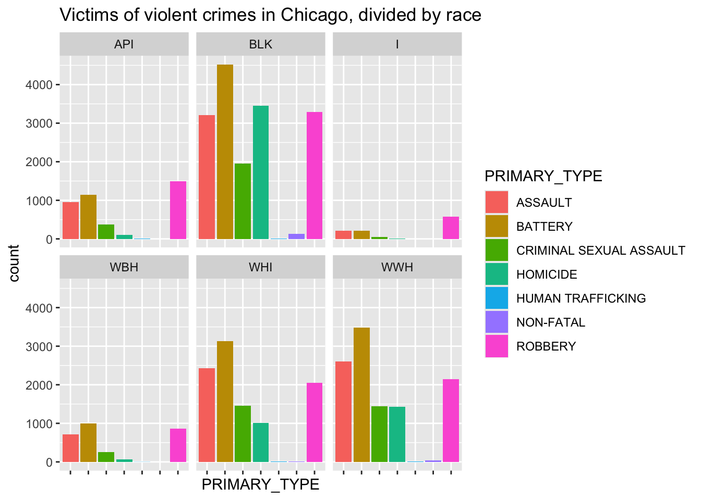
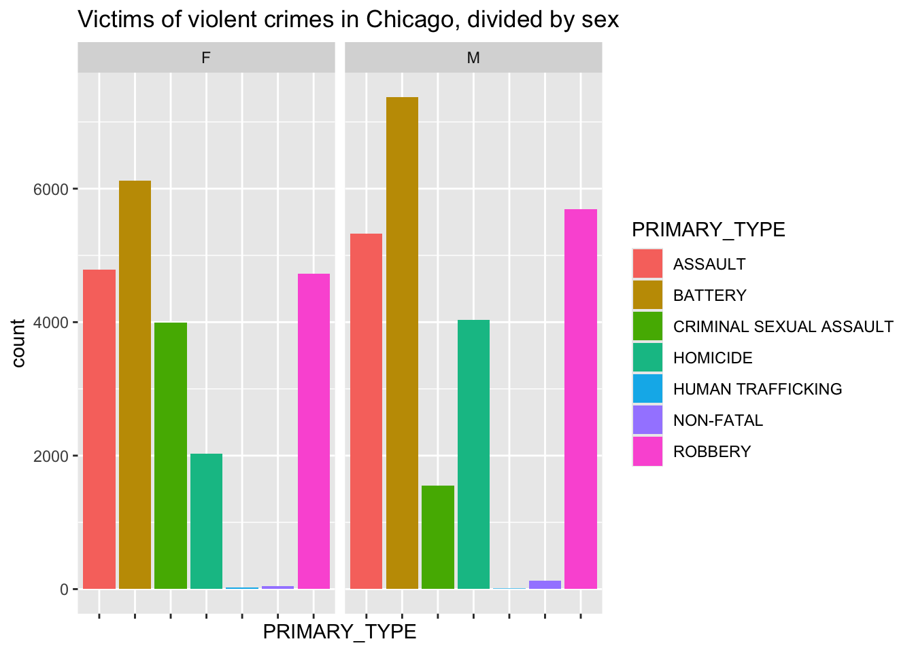
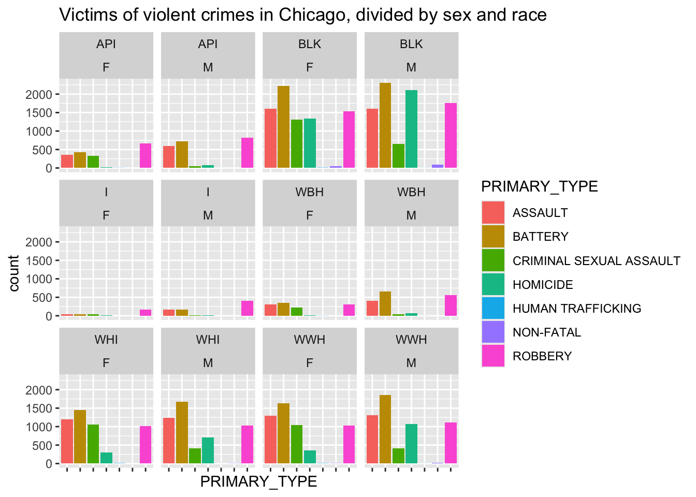
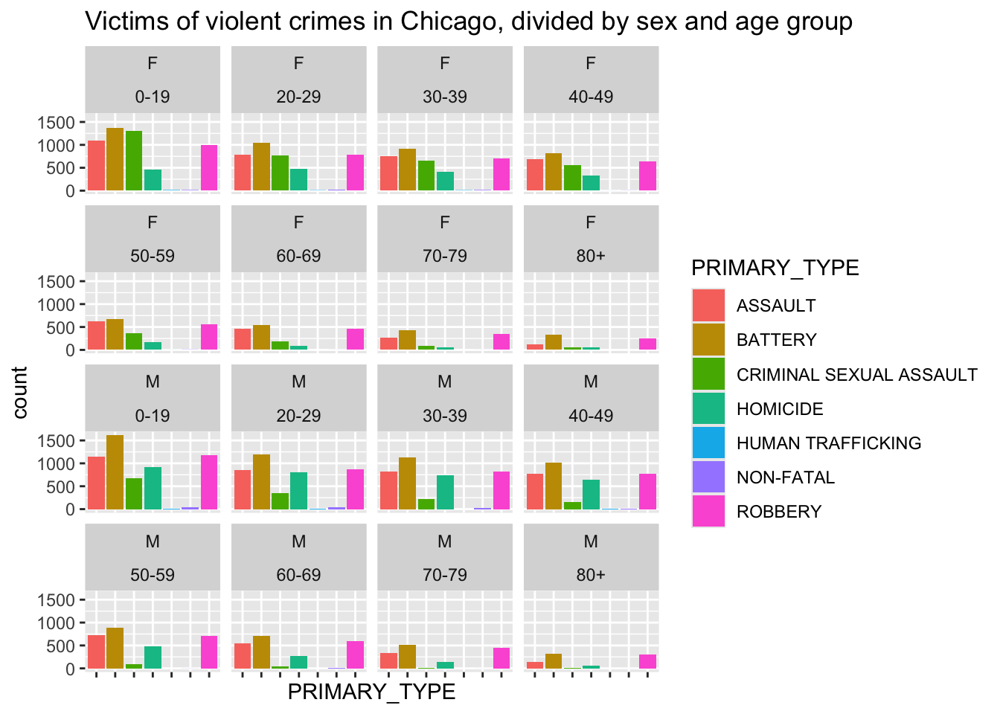

Rows: 51070 Columns: 12
── Column specification ────────────────────────────────────────────────────────
Delimiter: ","
chr (8): TIME_PERIOD, TIME_PERIOD_START, TIME_PERIOD_END, PRIMARY_TYPE, AGE,...
dbl (2): NUMBER_OF_VICTIMS, Year
lgl (2): JUVENILE_I, DOMESTIC_I
ℹ Use `spec()` to retrieve the full column specification for this data.
ℹ Specify the column types or set `show_col_types = FALSE` to quiet this message.
Violent crime is a persistent issue in Chicago, with widespread concerns about how different communities are affected. Awareness and occurrences of discrimination-based crimes has been increasing in the last few decades. This analysis is focused on how race and gender correlate with being a victim of a violent crime in order to shed light on how social and systemic discrimination affects real-world safety and how these problems can be addressed.
The variables of interest are:
- race of victim
- sex of victim
- type of violent crime
- time period
- age of victim
- whether a victim has been shot
We are especially interested in examining the relationships between:
- race and type of violent crime
- sex and type of violent crime
- age and type of violent crime
- time period and type of violent crime
A preview of the dataset:
tibble(Violence)
# A tibble: 45,842 × 12
TIME_PERIOD TIME_PERIOD_START TIME_PERIOD_END PRIMARY_TYPE AGE SEX RACE
<chr> <chr> <chr> <chr> <chr> <chr> <chr>
1 2022 Q2 03/01/2022 06/30/2022 BATTERY 70-79 M API
2 2015 Q4 10/01/2015 12/31/2015 ROBBERY 30-39 F API
3 2017 Q4 10/01/2017 12/31/2017 ASSAULT 0-19 M WWH
4 2023 Q3 07/01/2023 09/30/2023 ASSAULT 0-19 M WBH
5 2018 Q3 07/01/2018 09/30/2018 ROBBERY 30-39 F WHI
6 2024 Q1 01/01/2024 03/31/2024 ROBBERY 30-39 M API
7 2010 Q1 01/01/2010 03/31/2010 CRIMINAL SEX… 20-29 F API
8 2010 Q1 01/01/2010 03/31/2010 ROBBERY 70-79 M WHI
9 2017 Q3 07/01/2017 09/30/2017 ROBBERY 20-29 M WWH
10 2023 Q3 07/01/2023 09/30/2023 CRIMINAL SEX… 40-49 M WWH
# ℹ 45,832 more rows
# ℹ 5 more variables: JUVENILE_I <lgl>, DOMESTIC_I <lgl>,
# GUNSHOT_INJURY_I <chr>, NUMBER_OF_VICTIMS <dbl>, Year <dbl>
Some visualizations:
Examining the distribution of type of crime across races:
Violence |>ggplot(aes(x = PRIMARY_TYPE, fill = PRIMARY_TYPE)) +geom_bar() +facet_wrap(~RACE) +theme(axis.text.x =element_blank() ) +labs(title ="Victims of violent crimes in Chicago, divided by race" )

This gives some insight about the relationship between race and type of violent crime. It is clear that Black people in Chicago are disproportionately affected by assault and battery.
Examining the distribution of type of crime among gender:
Violence |>ggplot(aes(x = PRIMARY_TYPE, fill = PRIMARY_TYPE)) +geom_bar() +facet_wrap(~SEX) +theme(axis.text.x =element_blank() ) +labs(title ="Victims of violent crimes in Chicago, divided by sex" )

This gives insight as to which sexes experience each crime the most frequently. It is clear that men are more commonly victims of every violent crime except for sexual assault and human trafficking. There is also a staggering difference between how many men have experienced battery and homicide versus how many women have experienced it.
Examining the distribution of each crime across race AND sex:
Violence |>ggplot(aes(x = PRIMARY_TYPE, fill = PRIMARY_TYPE)) +geom_bar() +facet_wrap(RACE ~ SEX) +theme(axis.text.x =element_blank() ) +labs(title ="Victims of violent crimes in Chicago, divided by sex and race" )

This table shows that among all the races and sexes, Black men are the most common group to be victims of violent crime, with Black women following closely behind.
Examining the distribution of each crime across age:
Violence |>ggplot(aes(x = PRIMARY_TYPE, fill = PRIMARY_TYPE)) +geom_bar() +facet_wrap(SEX~AGE) +theme(axis.text.x =element_blank() ) +labs(title ="Victims of violent crimes in Chicago, divided by sex and age group" )

This table reveals that men aged 19 and under are the most likely to be a victim of a violent crime in Chicago, and women aged 19 and under follow closely behind.
Modeling and Inference:
Predicting whether a victim has sustained a gunshot injury:
Below is a logistic regression model that predicts whether or not a victim sustained a gunshot injury. This variable (“GUNSHOT_INJURY_I”) is binomial, where “YES” means the victim sustained a gunshot injury, and “NO”, The model is as follows:
The predictor variables (age group, sex, race) each affect the odds of whether or not the victim was shot. The “Intercepts” column gives a value for how much each predictor variable affects the odds. For example, “SEXM” = 0.25276, “RACEBLK” = 0.37543, and “AGE30-39” = -0.04596. This means the victim being male increases their odds of being a gunshot victim by a factor of about 0.25276, being black increases their odds by a factor of about 0.37543, and being within the age group of 30-39 decreases their odds by a factor of about 0.04596. The odds should fall somewhere between 0 and 1, where 0 indicates no chance of sustaining a gunshot injury, and 1 indicates 100% odds of sustaining a gunshot injury. The ‘Error’ column indicates the error margin of each intercept.
Flaws and Limitations:
More detailed data that would be helpful includes the regions of the city where these crimes occurred. This could have helped with determining which areas are the most affected by crime. Having data of extra factors, such as context of the crime (i.e., domestic violence, gang-related violence, accidental crimes, police brutality, etc.) could have helped with analyzing why certain crimes against certain groups are more prevalent than others. Using only the given data forces the assumption that every part of the city is equally affected by crime, and anyone in any part of the city has equal odds of being a victim of a crime. Knowing more specific locations and contexts would have allowed for more accurate calculations and predictions.